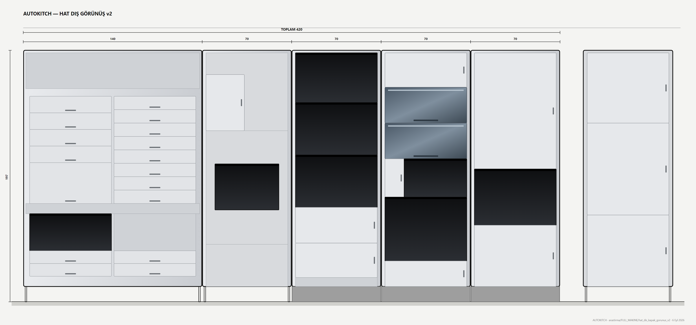

DÜKKAN — HAT · Yol CÜST SAYFA
Makine v57 (Kemal'in onayladığı resme göre bütün mekanizma 168 aşağı): hat 5430 × 830 × 1862. Tek parça çekmeceli dolap 0–4000, üstü 788 = tek düz çizgi; A açıcı 700 · C TOPPING 1800 · F fırın 1500 onun üstünde (disk 1000 · fırın bandı 998 · K bandı 996 · E tepsisi 936) · K kesme 600 · E kutu 830 yerden tavana. Tek FR5 yer rayında (x 200–5100); karşısında yeni S modülü: QR dolabı 860 × 520 × 2050 (12 göz; robot kontrol kutusu, ana pano, UPS içinde) + personel tezgâhı 600 × 450 × 900. Soğukta tam 2 gün: pide 160 · lahmacun 432 · içecek 144 · tatlı 12; içecek yedeği 6 koli E'nin altında (toplam 288 = 4 gün); pizza kutusu şarjör 462 + fırın üstü 320. Bulaşık makinesi K'nin altında, deterjan + parlatıcı arkasında. Fırın = Sveba Dahlen TP10 kesitli, gövdesi 1500'e uzatılmış kızılötesi konveyör fırın (özel sipariş); pideyi diskten fırına aktarma iticisi iter. Dükkân iç 570 × 271 — aşağıdaki sahne ve plan v14 güncel. Sayfalar: MAKİNE (3B montaj + animasyon) · STORE · 4 · FIRIN · TOPPING v2 · KESME · PACK · QR DOLABI · TEZGÂH.
Önceki durum (26 Eyl gece · v56): hat 5430 × 830 × 2030, B çekmece 2500 × 1060 yalnız A ile C'nin altında, fırının altında taban dolabı (bulaşık, pano, UPS, içecek), plan v11 (iç 570 × 263). (20 Eyl): kalan istasyon sayfaları 14 Eylül'ün tepsili hattını anlatıyordu. Seçenek karşılaştırması: HAT SEÇENEKLERİ.
Tek dükkân, bir kişilik otonom pide hattı. 3B modelde makine artık GERÇEK ÜRETİM MODELİ (montaj v64 · 543 × 90,9 × 186 cm · bütün istasyonların ön yüzü fırınla aynı düzlemde · QR dolabı, personel tezgâhı, robot ve ray dahil; ön kapaklar şeffaf) — dükkân planındaki yerinde. Üstüne gelince parçanın adı çıkar, tıklayınca MAKİNE sayfası. Oda, kapı, pencere, müşteri tezgâhı ve menü ekranı plan ölçüsünde kutu (cm). gerçek model yükleniyor (~45 MB)…
Dükkân planı v15 · ön düzlem

1 · Genel çalışma senaryosu — siparişten teslime
Bu senaryo 14 Eylül'ün tepsili hattını anlatıyor (önceki). Güncel ürün akışı — çekmece → açıcı → TOPPING → fırın → kesme → kutu → QR gözü — MAKİNE sayfasındaki animasyonda.
- Müşteri kaldırımdaki sipariş ekranından ya da uygulamadan sipariş verir, ÖKC POS ile öder; fişte sipariş numarası ve 4 haneli dolap kodu yazar. Platform siparişleri (Yemeksepeti, Getir, Trendyol Go) entegratörle BEYİN'e düşer.
- BEYİN reçeteyi kuyruğa alır; fırın BEKLEME (340 °C) ya da EKO (250 °C) konumundan hazırlanır. Robot STORE'dan taze hamur topunu pençeyle alır.
- Top PRESS'te tepsi içinde Ø29 ısıtmalı plakayla açılır; pide bundan sonra hep tepsidedir (Ø32, kulp 6).
- Robot tepsiyi TOPPING katlarına sürer; kaplar helezonla gramaj döker (kaşar, sucuk küp, kıyma, kuşbaşı); tepsi tepsi düzleminde dönmez, kaplar sabittir.
- OVEN: sadeyağ spreyi (4 ml), taş fırın 3–4 dk (Omake çift katlı, motorlu cam kapak), çıkışta kesme presi 4 parça.
- PACK: üstten beslemeli kutu açıcı kutuyu kalıpta 1 vuruşta açar; tepsi eğilir, 4 parça kutuya kayar; flaplar ve kapak kapanır.
- Robot kutuyu pençeyle TESLİM DOLABI'nın arka klapesinden boş dolaba iter; içecek ve tatlı STORE'dan aynı dolaba konur. Kod aktif olur, SMS gider.
- Müşteri ya da kurye kod ünitesine PIN/QR girer; kapı açılır, alır; kapı kendiliğinden kapanır, dolap serbest kalır.
- Eleman haftada bir gelir: kaplar, kutu demetleri, yağ kabı; SERVICE dolabı ve tezgah onun. Günlük kova ve tepsi yıkama.
2 · Dükkan · özellikler ve karar özeti
Kurallar (Yol C)
3 · Teknik resimler


4 · Tedarikçiler · fiyatlar (genel)
| Tedarikçi / ürün | Ne | Fiyat / durum |
|---|---|---|
| Fersah | PZP-400 pide/pizza presi (PRESS) | teklif alındı, bkz. PRESS |
| Omake / Cafemarkt | FPZ01.E21 çift katlı taş fırın (OVEN) | 40.169 TL |
| Picnic (referans) | helezonlu kap + tarak dozaj mantığı (TOPPING) | referans |
| KioSelf · Onega · İnnova · Kardo | 32" sipariş kiosku + ÖKC POS + fiş | 50–120 bin TL (teklif) |
| pudo · Easy Point · Emanetmatik · Fitekno | kilit kartı, kabin (teslim dolabı) | özel yapım 60–90 bin TL |
| Fanuc CRX-20iA/L · Doosan H2017 · TM20 | kobot 16–20 kg, menzil 142–170 | kol 600 bin – 1,8 mln TL |
Maliyet bandı — kalem kalem (teklifle netleşecek)
| Kalem | Kaynak / aday | Bant |
|---|---|---|
| STORE kombine kasa | İnoksan · Öztiryakiler · Frenox | 90–150 bin TL |
| Çekmece + sürücü entegrasyonu | entegratör | 40–80 bin TL |
| PRESS | Fersah PZP-400 | 100–300 bin TL |
| TOPPING kapları + kabin | yerli imalat (POM + PC + paslanmaz) | 80–150 bin TL |
| OVEN fırın | Omake FPZ01.E21 | 40 bin TL |
| OVEN kesme + sadeyağ ünitesi | entegratör | 15–25 bin TL |
| PACK kutu açıcı | entegratör imalatı | 40–60 bin TL |
| Robot kol | Fanuc · Doosan · Techman | 600 bin – 1,8 mln TL |
| 7. eksen ray 3–4 m | entegratör | 150–300 bin TL |
| Uç değiştirici + 2 uç + kamera | SMARTSHIFT · Robotiq sınıfı | 80–160 bin TL |
| BEYİN (PLC + mini PC + yazılım) | Siemens S7-1200 sınıfı | 150–400 bin TL |
| Teslim dolabı | entegratör kabin + kilit kartı (yerli Kutu/Metasel bandı 150–400 bin) | 60–400 bin TL |
| Sipariş kiosku + ÖKC POS | KioSelf · Onega · İnnova · Kardo | 40–120 bin TL |
| Şasi · pano · montaj · devreye alma | entegratör | 100–200 bin TL |
Bu bantlar araştırma notlarından ve alınan tekliflerden gelir; kesin fiyat teklif turunda netleşecek. Bulut paneli ayrıca ayda ≈ 300–1.000 TL.
5 · Soru işaretleri · açık konular (hat geneli)
| # | Problem | Durum | Çözüm / not |
|---|---|---|---|
| G1 | Robot kol arızası — hat durur | ÖNERİ VAR | yedek uç + servis sözleşmesi; eleman manuel teslim |
| G3 | Elektrik kesintisi sipariş ortasında | ÖNERİ VAR | mini UPS yalnız BEYİN; fırın kapalı kalır, sipariş iade |
| G4 | Kol kalibrasyonu kayarsa | ÖNERİ VAR | referans pimleri + kamera kontrolü |
| G5 | Hijyen denetimi (belediye/tarım) | AÇIK | kapalı panel, yıkanabilir tepsi, eleman günlük temizlik |
| R-T3 | Tepsi havuzu / yıkama (8–10 tepsi, ~80/gün) | AÇIK | bulaşık listesi SERVICE'te |
| R-T4 | Kol doluluğu ~%85 (103 sn/pide) | AÇIK | iki fırın katı + kutu ön hazırlığı ile pik 25–30/saat |
| ⑦ | Kol yükü 15,2 kg (kıyma kabı + kap + çatal), menzil ≥ 130 | AÇIK | 16–20 kg sınıfı kobot; CRX-20iA/L 142 / H2017 170 / TM20 130 |
| ⑤ | Fersah Ø30 taban sorusu | AÇIK | tekrar sorulacak |
| ① | STORE v5 (−18 kaset katı klapeli) | ÖNERİ VAR | Kemal onayı |
| v57 | Alçak hat açıkları: dik U enerji zinciri ↔ açık K1 alt çekmeceleri · QR göz tabanında çatal dişi yuvası yok · deterjan kanisteri bulaşık çekilmeden değişmiyor · içecek yedeğinin kapağı yok · tezgâh önü 39 cm · soğutma yükü hesaplanmadı | AÇIK | ayrıntı MAKİNE sayfasında |
6 · Sürüm geçmişi
- Dükkan v14 (27 Eyl): alçak hat 543 × 83 × 186 (montaj v57), QR dolabı 86 × 52 × 205 + personel tezgâhı, ray ekseni hat önünden 36, iç 570 × 271; önceki v11 (26 Eyl): hat 543 × 83 × 203, iç 570 × 263
- Dükkan v7 (7 Eyl): düz cephe, ön sıra SERVICE derinliğinde, 11,1 m²
- Dükkan v5–v6 (7 Eyl): tek sıra cephe, kademeli deneme (reddedildi)
- Dükkan v1–v4 (7 Eyl): kroki okuma denemeleri; v4 kroki birebir
- HAT v51 (6 Eyl): PACK v4 kutu açıcı ile tüm hat; HAT v50: OVEN v5 tek yağ kabı; HAT v48: OVEN v3 kolon 70
- HAT v44–v47 (4–5 Eyl): STORE v4, PRESS v8, TOPPING v25/v26, KONTROL kutusu
- Yol C kararı (Ağu 2026): merkez mutfaksız, tek dükkân, bir kişilik hat